プレイヤーを動かそう
🎯 この章でできるようになること
- アセットストアの素材で、キャラクターの見た目を入れかえられる
- 動いているかどうかで、アニメーションを切りかえられる
- マウスの位置（CursorX、CursorY）をイベントで使える
- クリックしたらナイフを作って、マウスのほうへ飛ばせる
1-1. この章で作るしくみ
1-2. トップダウンのスターターから作ろう
今回は「Top-down」（真上から見下ろす）のスターターから始めます。
歩く・壁にぶつかる・カメラがついてくる、といった基本はもう入っています。
そこに、騎士の見た目やナイフ、敵を足していきます。
https://editor.gdevelop.io を開いて、ログインしていることを確かめます。
ホーム画面の左のメニューで「作成」を選び、右の「＋ 新しいゲームを作成」を押します。
「自分で作る」の列から「Top-down」を選ぼう。

「プロジェクト名」の欄に my-dungeon と入力します。
保存先が「GDevelop クラウド」になっていることを確かめて、「新しいゲームを作成」を押します。
クラウドのプロジェクトは3つまで、というメッセージが出て作れないときは、第0章「4本目のゲームを作りたくなったら」を見てね。
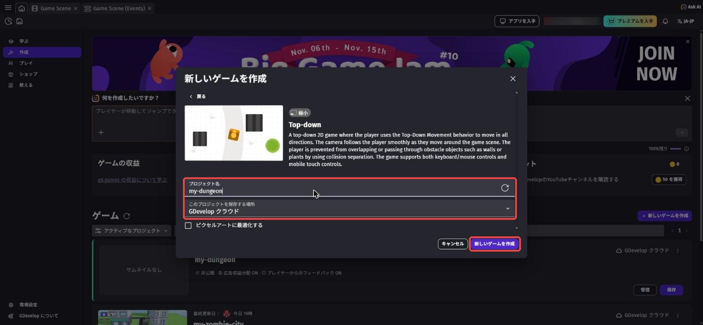
my-dungeon（赤枠）にして、「新しいゲームを作成」（赤枠）を押すエディタが開くと、まん中にステージが見えます。
右の「オブジェクト」の一覧に、Player（プレイヤー）、Ground_Tilemap（床）、Plant_Obstacle（草のかべ）、Wall_Obstacle（石のかべ）などがあります。
上の「プレビュー」を押すと、矢印キーでプレイヤーを歩かせられます。
少し遊んだら、ゲームのタブを閉じてエディタにもどろう。
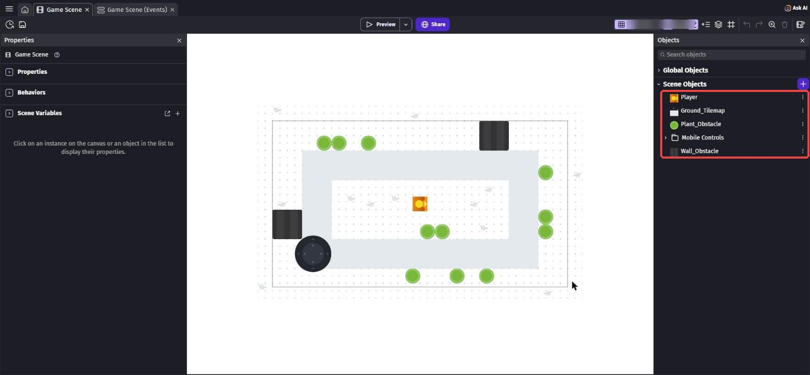
1-3. プレイヤーを騎士にしよう
「オブジェクト」の「＋」を押して、アセットストア（素材のお店）を開きます。
検索欄に dungeon と入れて、「Dungeon」（作者: Robert Norenberg (0x72)）のパックを開きます。
ライセンスは「CC0 (public domain)」なので、自由に使えます。
Character のなかに、騎士やゴブリンなどのキャラがたくさん入っています。

いったん「閉じる」で閉じます。
一覧の Player の「⋮」から「アセットの交換」（素材を入れかえる）を選びます。
検索で knight male と入れて「Knight Male」を選び、「交換」を押します。
名前は Player のまま、見た目だけ騎士になります。
アニメーションは「Idle」（立つ）「Run」（走る）「Hit」（ダメージ）の3つです。
アニメーションの名前は素材についている名前なので、日本語の画面でも英語のまま表示されます。
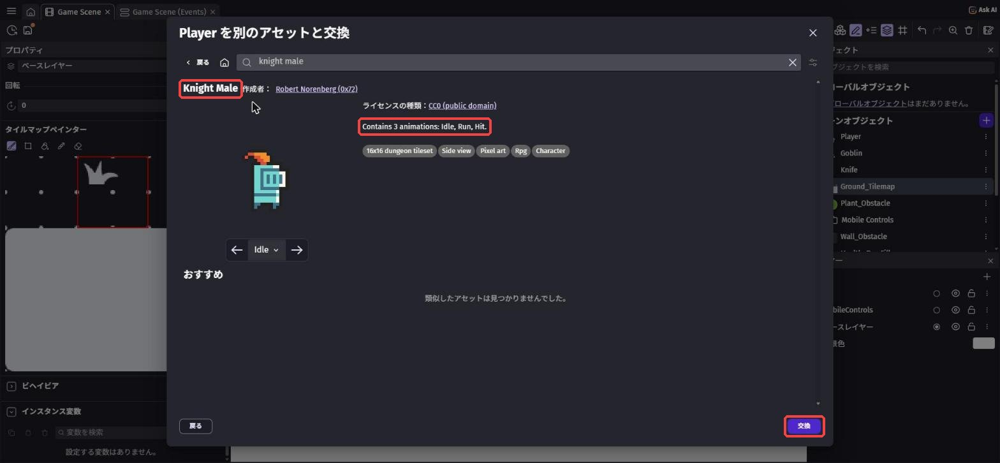
あとから「やっぱりこのキャラがいい」と思ったときも、これを使えば作り直さなくてすみます。
シーンの騎士をクリックすると、左に Player のプロパティが出ます。
「TopDownMovement」のところの「オブジェクトを回転する」をOFFにします。
ONのままだと、歩く方向に合わせて騎士がくるくる回ってしまいます。
このゲームでは、左右の向きはあとで「反転」で作ります。
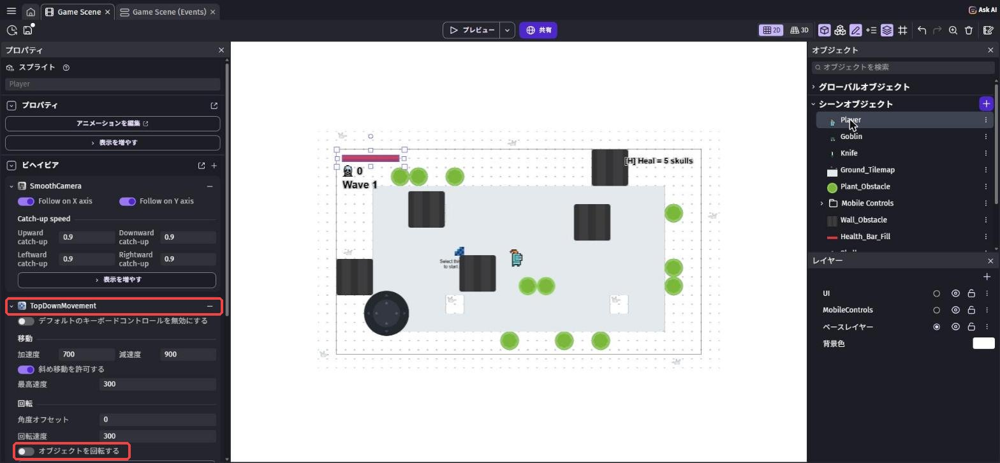
もう一度「＋」から Dungeon のパックを開き、「Weapon」の中の「Knife」を選んでプロジェクトに追加します。
ナイフはイベントで作り出すので、シーンに置かなくてOK。
もし置いてしまったら、シーンのナイフをクリックして Delete キーで消しておこう。
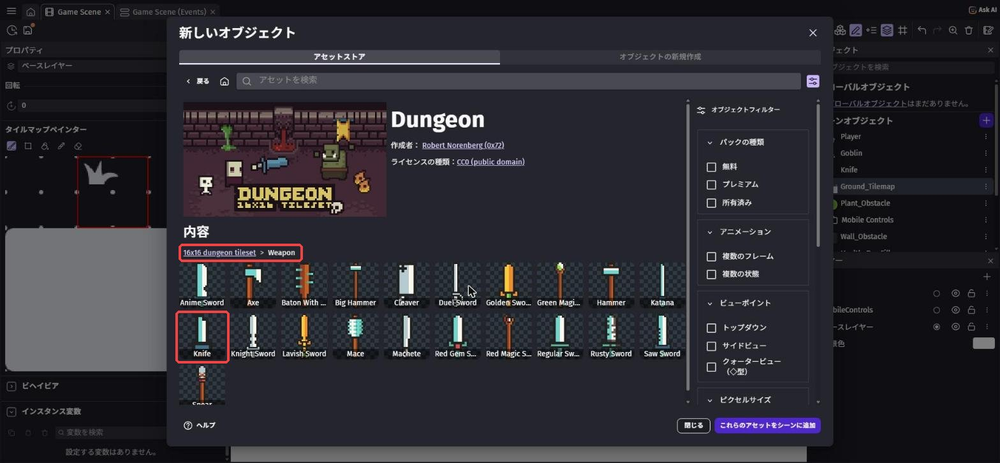
1-4. 歩くアニメーションと向きをつけよう
上のタブの「Game Scene (Events)」を開きます。
スターターのイベント（プレイヤーをかべから押しもどすイベント）は、消さずにそのまま残しておきます。
右下の「+ 追加...」→「イベントグループ」で、新しいグループ Player を作ります。
グループをクリックしてから Shift + D を押すと、グループの中にイベントができます。
条件は 移動している で検索 →「移動している」（トップダウン移動 のもの）、オブジェクト は Player。
アクションは アニメーション名 で検索 →「アニメーション名」で Player を「Run」。
イベントをクリックして Shift + A で下に新しいイベントを作ります。
条件はまた「移動している」で Player にして、下の「条件を反転」（条件を反対にする）をONにします。
アクションは「アニメーション名」で「Idle」。
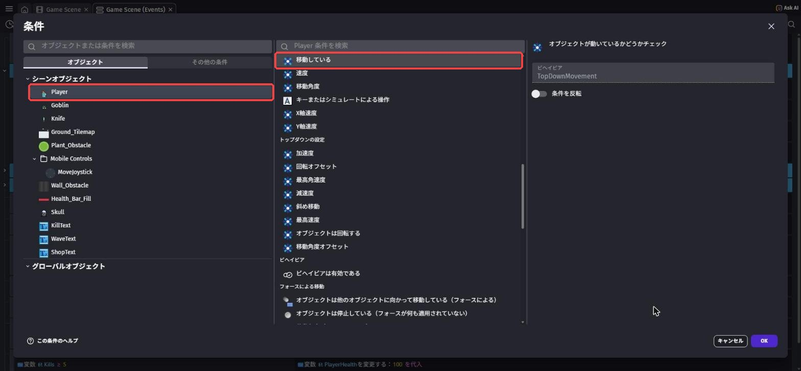
新しいイベントを作り、条件に 二つの数値を比較 で検索 →「二つの数値を比較する」を入れます。
最初の式 に CursorX()、テスト記号 は「<（より小さい）」、二つ目の式 に Player.CenterX()。
「マウスのXが、プレイヤーのまん中より小さい」＝「マウスが左にある」という意味です。
アクションは 水平方向に反転 で検索 →「オブジェクトを水平方向に反転させる」、Player を「はい」（反転する）。
もう1つイベントを作り、テスト記号 を「≧（以上）」にして、反転 を「いいえ」にします。
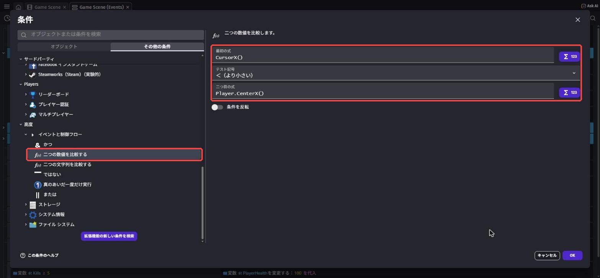
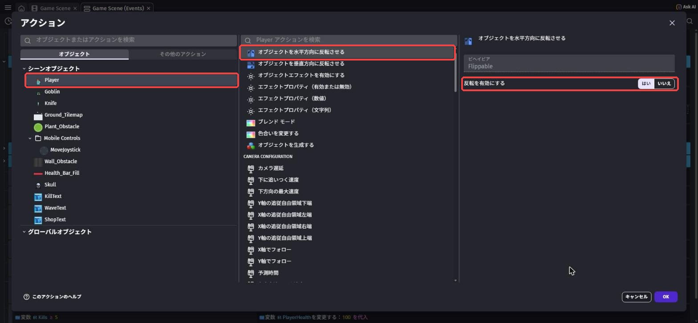
Y座標は CursorY() です。
Player.CenterX() は、プレイヤーのまん中のX座標です。
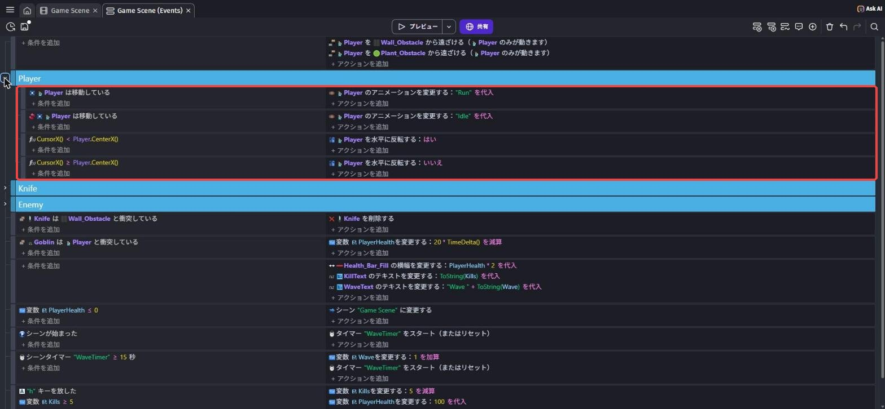
1-5. ナイフを投げよう
新しいグループ Knife を作り、その中にイベントを作ります。
条件は マウスボタンを放した で検索 →「マウスボタンを放した直後」、ボタンは「左クリック（メイン）」。
アクションは4つです。
オブジェクトを生成で検索 →「オブジェクトを生成する」、Knifeを XPlayer.CenterX()、YPlayer.CenterY()に作る角度で検索 →「角度」、Knifeを下の式にする座標に向かって移動で検索 →「座標に向かって移動するフォースを追加する」、Knife、XCursorX()、YCursorY()、速度600、下は「永続的」スケールで検索 →「スケール」、Knifeを3（3倍の大きさ）
Knife.AngleToPosition(CursorX(), CursorY()) + 90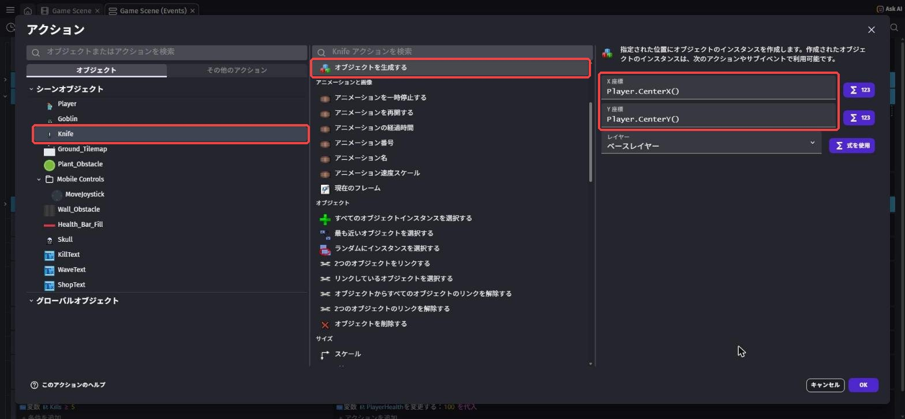
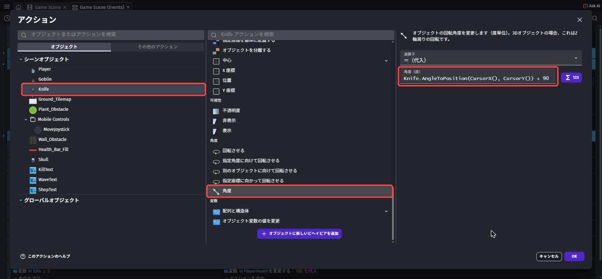
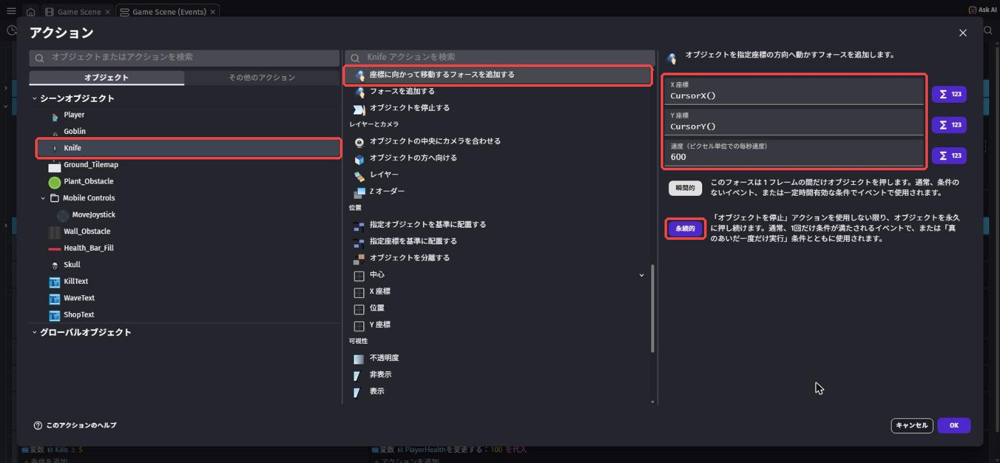
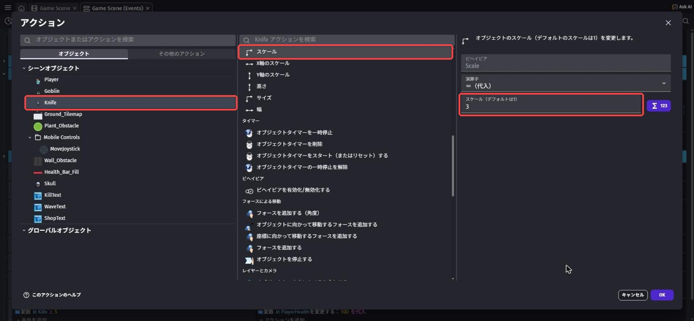
でも Knife の画像は、もともと上を向いています。
そのままだと横向きに飛んでしまうので、90度足して、刃先がマウスのほうを向くようにしています。
新しいイベントを作り、条件に「2つのオブジェクト間の距離」で Knife と Player、距離 600。
「条件を反転」をONにして「600 より遠い」にします。
アクションは「オブジェクトを削除する」で Knife。
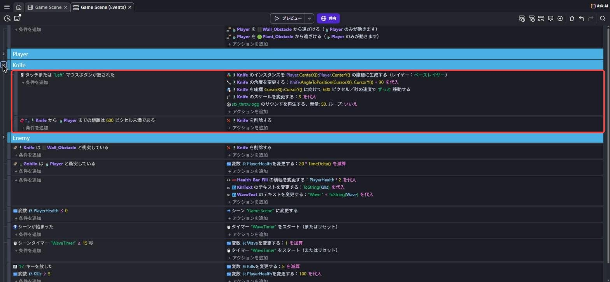
Ctrl + S（Macは Cmd + S）で保存してから プレビュー します。
矢印キーで歩くと走るアニメーションになり、止まると立つアニメーションにもどります。
マウスを左右に動かすと、騎士がマウスのほうを向きます。
クリックするたびに、マウスのほうへナイフが飛んでいけば成功！
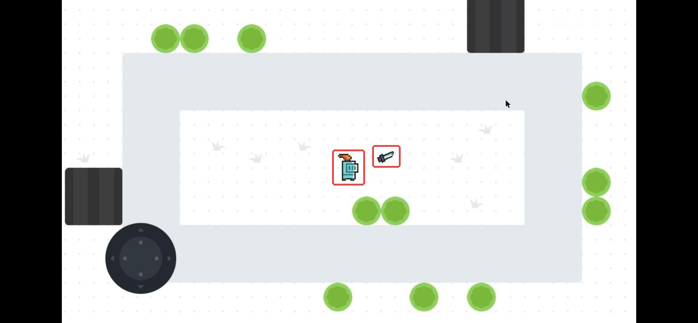
💪 やってみよう
ナイフの速さ（600）や大きさ（3）を変えてみよう。
Weapon フォルダのほかの武器（斧やハンマーなど）にかえるのもおもしろいよ。
ヒント
Knife の「⋮」から「アセットの交換」を使うと、名前はそのままで見た目だけ入れかえられます。
向きがずれたら、角度 の式の「+ 90」を「+ 45」などに変えてみよう。
1-6. 🚨 つまずきポイント集
騎士がくるくる回る
原因: TopDownMovement の「オブジェクトを回転する」がONのまま。
直し方: シーンの騎士をクリックして、オブジェクトを回転する をOFFにしよう。
ナイフが横向きに飛ぶ
原因: 角度 の式に「+ 90」がない。
直し方: 式が Knife.AngleToPosition(CursorX(), CursorY()) + 90 になっているか確かめよう。
ナイフが出るけど動かない
原因: フォースが「瞬間的」になっている。
直し方: 「座標に向かって移動するフォースを追加する」を開いて、「永続的」を選びなおそう。
左右の向きが逆になる
原因: 「はい」と「いいえ」が反対になっている。
直し方: マウスが左（<）のときに はい、右（≥）のときに いいえ になっているか確かめよう。
1-7. ✅ チェックリスト
全部チェックできたら第1章クリア！
🎉 次回は、ゴブリンがおそってくるよ。